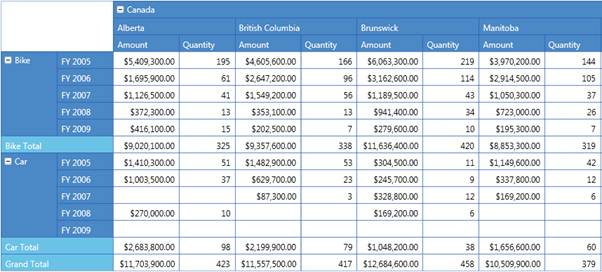

Essential PivotGrid for Silverlight is a powerful cell-oriented, extensible grid control. It simulates the pivot table feature of Excel. The PivotGrid, as the name implies, pivots the data and organizes them in a cross-tabulated form. The major advantage with a pivot grid is that you can extract the desired information from a huge list within seconds. Along with presenting the data, a pivot grid also enables you to summarize and group data. It finds its main application in the financial domain, where it is used to organize and analyze business data.
IT Scenarios
The PivotGrid is mainly used in financial domain, where it is used to organize and analyze business data.

Figure 1: PivotGrid Control